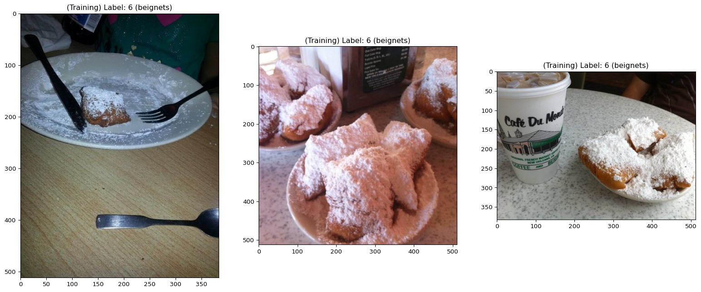
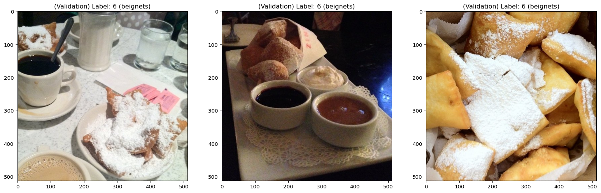

Loading data
In this section, we download the Food-101 [1] dataset that we will later use to train and fine-tune models.
Context
Step one of a classic deep learning workflow: getting the data. There are several options. In this example, we use Datasets from Hugging Face.
Load packages
Packages necessary for this section:
# to get information about a dataset before downloading it
from datasets import load_dataset_builder
# to load dataset from Hugging Face Hub
from datasets import load_dataset
# to display a few samples
import matplotlib.pyplot as pltChoosing a library
Data can be downloaded and processed manually, but many datasets are available via Hugging Face datasets, torchvision, and TensorFlow datasets. Remember that JAX does not implement domain-specific utilities and is not a deep learning library. Flax is a deep learning library, but, because there are already so many good options to load and process data, they did not implement a method of their own.
Choose the library you are the most familiar with, or the one for which you found code somewhere, or the one that seems the easiest to you, or provides the exact functionality that you want for your project.
The Food-101 dataset for instance can be accessed with torchvision.datasets.Food101 since it is one of TorchVision datasets or with tfds.image_classification.Food101 since it is also one of TFDS datasets.
It is also in the Hugging Face Hub and that’s the method that we will use here.
Hugging Face datasets
The Datasets library from Hugging Face is a lightweight, framework-agnostic, and easy to use API to download datasets from the Hugging Face Hub. It uses Apache Arrow’s efficient caching system, allowing large datasets to be used on machines with small memory [2].
Search dataset
Go to the Hugging Face Hub and search through thousands of open source datasets provided by the community.
Inspect dataset
You can get information on a dataset before downloading it.
Load the dataset builder for the dataset you are interested in:
ds_builder = load_dataset_builder("food101")Get a description of the dataset (if it exists—here it doesn’t):
ds_builder.info.description''Get information on the features:
ds_builder.info.features{'image': Image(mode=None, decode=True, id=None),
'label': ClassLabel(names=['apple_pie', 'baby_back_ribs', 'baklava', 'beef_carpaccio', 'beef_tartare', 'beet_salad', 'beignets', 'bibimbap', 'bread_pudding', 'breakfast_burrito', 'bruschetta', 'caesar_salad', 'cannoli', 'caprese_salad', 'carrot_cake', 'ceviche', 'cheesecake', 'cheese_plate', 'chicken_curry', 'chicken_quesadilla', 'chicken_wings', 'chocolate_cake', 'chocolate_mousse', 'churros', 'clam_chowder', 'club_sandwich', 'crab_cakes', 'creme_brulee', 'croque_madame', 'cup_cakes', 'deviled_eggs', 'donuts', 'dumplings', 'edamame', 'eggs_benedict', 'escargots', 'falafel', 'filet_mignon', 'fish_and_chips', 'foie_gras', 'french_fries', 'french_onion_soup', 'french_toast', 'fried_calamari', 'fried_rice', 'frozen_yogurt', 'garlic_bread', 'gnocchi', 'greek_salad', 'grilled_cheese_sandwich', 'grilled_salmon', 'guacamole', 'gyoza', 'hamburger', 'hot_and_sour_soup', 'hot_dog', 'huevos_rancheros', 'hummus', 'ice_cream', 'lasagna', 'lobster_bisque', 'lobster_roll_sandwich', 'macaroni_and_cheese', 'macarons', 'miso_soup', 'mussels', 'nachos', 'omelette', 'onion_rings', 'oysters', 'pad_thai', 'paella', 'pancakes', 'panna_cotta', 'peking_duck', 'pho', 'pizza', 'pork_chop', 'poutine', 'prime_rib', 'pulled_pork_sandwich', 'ramen', 'ravioli', 'red_velvet_cake', 'risotto', 'samosa', 'sashimi', 'scallops', 'seaweed_salad', 'shrimp_and_grits', 'spaghetti_bolognese', 'spaghetti_carbonara', 'spring_rolls', 'steak', 'strawberry_shortcake', 'sushi', 'tacos', 'takoyaki', 'tiramisu', 'tuna_tartare', 'waffles'], id=None)}Download dataset
We will only use the first 5 classes of food (instead of 101) to test our code. To prevent us from all downloading the data (by default in ~/.cache/huggingface), we will use a joint cache directory at /project/60055/data.
train_size = 5 * 750
val_size = 5 * 250
train_dataset = load_dataset("food101",
split=f"train[:{train_size}]",
cache_dir="/project/60055/data")
val_dataset = load_dataset("food101",
split=f"validation[:{val_size}]",
cache_dir="/project/60055/data")Explore data
Let’s inspect our data:
print("Training set size:", len(train_dataset))
print("Validation set size:", len(val_dataset))
print("Training set shape:", train_dataset.shape)
print("Validation set shape:", val_dataset.shape)
print("First item of training set:", train_dataset[0])
print("Firt image of training set:", train_dataset[0]["image"])
print("First label of training set:", train_dataset[0]["label"])Training set size: 3750
Validation set size: 1250
Training set shape: (3750, 2)
Validation set shape: (1250, 2)
First item of training set: {'image': <PIL.Image.Image image mode=RGB size=384x512 at 0x7F3D343F5190>, 'label': 6}
Firt image of training set: <PIL.Image.Image image mode=RGB size=384x512 at 0x7F3D834D60F0>
First label of training set: 6Here is the beginning of the list of foods:
print(train_dataset.features["label"].names[:5])['apple_pie', 'baby_back_ribs', 'baklava', 'beef_carpaccio', 'beef_tartare']And here is the food of the first item in the training set (label 6):
print("First food of training set:", train_dataset.features["label"].names[6])First food of training set: beignetsTo make this simpler, we can create a mapping of the labels matching their order:
labels_mapping = {}
index = 0
for i in range(0, len(val_dataset), 250):
label = val_dataset[i]["label"]
if label not in labels_mapping:
labels_mapping[label] = index
index += 1
inv_labels_mapping = {v: k for k, v in labels_mapping.items()}
print(inv_labels_mapping){0: 6, 1: 79, 2: 81, 3: 53, 4: 10}And a mapping of the names:
names_map={k: train_dataset.features["label"].names[v] for k, v in inv_labels_mapping.items()}
print(names_map){0: 'beignets', 1: 'prime_rib', 2: 'ramen', 3: 'hamburger', 4: 'bruschetta'}Now, to get the food of the first item, we just have to do:
print(names_map[0])beignetsHere is a function to display some samples (their images, label, and food type):
def display_datapoints(*datapoints, tag="", names_map=None):
num_samples = len(datapoints)
fig, axs = plt.subplots(1, num_samples, figsize=(20, 10))
for i, datapoint in enumerate(datapoints):
if isinstance(datapoint, dict):
img, label = datapoint["image"], datapoint["label"]
else:
img, label = datapoint
if hasattr(img, "dtype") and img.dtype in (np.float32, ):
img = ((img - img.min()) / (img.max() - img.min()) * 255.0).astype(np.uint8)
label_str = f" ({names_map[label]})" if names_map is not None else ""
axs[i].set_title(f"{tag} Label: {label}{label_str}")
axs[i].imshow(img)Let’s display the first 3 items (images and labels) of both the training and validation sets:
display_datapoints(
train_dataset[0],
train_dataset[1],
train_dataset[2],
tag="(Training)",
names_map=train_dataset.features["label"].names,
)
display_datapoints(
val_dataset[0],
val_dataset[1],
val_dataset[2],
tag="(Validation)",
names_map=val_dataset.features["label"].names,
)

References
1.
Bossard L, Guillaumin M, Van Gool L (2014) Food-101 – mining discriminative components with random forests. In: European conference on computer vision
2.
Lhoest Q, Villanova del Moral A, Jernite Y, et al (2021) Datasets: A community library for natural language processing. In: Proceedings of the 2021 conference on empirical methods in natural language processing: System demonstrations. Association for Computational Linguistics, Online; Punta Cana, Dominican Republic, pp 175–184